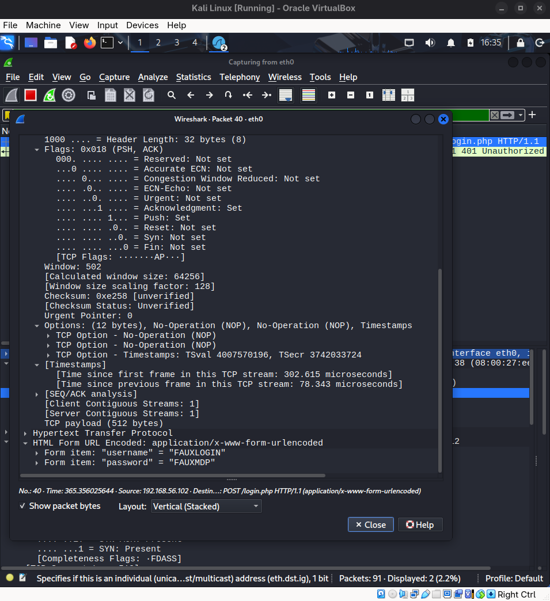
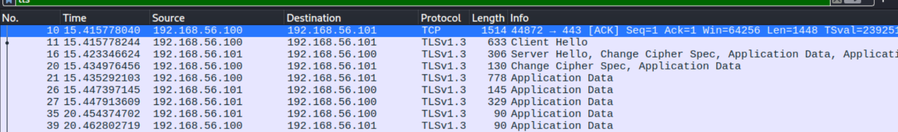

Analyse d’une attaque Man-In-The-Middle
Réalisation professionnelle
Réalisation d’un travail pratique de cybersécurité portant sur l’analyse d’une attaque Man-In-The-Middle dans un environnement virtualisé.
Contexte
Dans le cadre de ma formation en BTS SIO, j’ai réalisé un TP permettant de comprendre le fonctionnement d’une attaque MITM sur un réseau local. Le but était d’observer l’interception de communications en HTTP, puis de comparer le résultat après sécurisation du serveur avec HTTPS.
Objectifs
- Déployer un environnement de test avec plusieurs machines virtuelles.
- Comprendre le rôle des adresses IP et MAC dans la communication réseau.
- Étudier le fonctionnement du protocole ARP.
- Mettre en évidence le principe de l’ARP spoofing.
- Observer l’interception d’identifiants transmis en HTTP.
- Mettre en place HTTPS et constater la protection apportée par le chiffrement.
Démarche suivie
1. Mise en place de l’environnement
Le TP a été réalisé dans un environnement virtualisé comprenant plusieurs machines : une machine cliente, une machine serveur hébergeant l’application web, et une machine attaquante utilisée pour observer et intercepter le trafic réseau.
2. Analyse du réseau
Avant l’attaque, j’ai étudié les notions nécessaires au TP : différence entre adresse MAC et adresse IP, rôle du protocole ARP, fonctionnement de l’IP forwarding et principe de l’ARP spoofing.
3. Interception du trafic HTTP
Une fois l’attaque mise en place, j’ai pu observer le trafic réseau avec Wireshark. Comme les données transitaient en HTTP, les identifiants saisis dans le formulaire étaient visibles en clair dans les paquets capturés.
4. Comparaison avec HTTPS
Après avoir réussi à intercepter les identifiants transmis en HTTP, j’ai observé le comportement du trafic lorsque le serveur utilise HTTPS. Dans Wireshark, les échanges apparaissent alors sous forme de paquets TLS, ce qui empêche de lire directement le contenu du formulaire.
Compétences mobilisées
- Analyse de trames réseau
- Compréhension des protocoles ARP, HTTP et HTTPS
- Utilisation de Wireshark
- Sensibilisation à la sécurité des communications
- Observation des effets du chiffrement TLS
Captures et preuves
Les captures ci-dessous montrent la différence entre une communication HTTP non chiffrée et une communication HTTPS chiffrée lors d’une tentative d’interception réseau.


Conclusion
Ce TP m’a permis de comprendre concrètement le fonctionnement d’une attaque Man-In-The-Middle et les risques liés à l’utilisation de HTTP. J’ai pu constater qu’une communication non chiffrée peut exposer des informations sensibles, alors que l’utilisation de HTTPS protège les échanges grâce au chiffrement. Cette réalisation m’a permis de renforcer mes compétences en réseau et en cybersécurité.